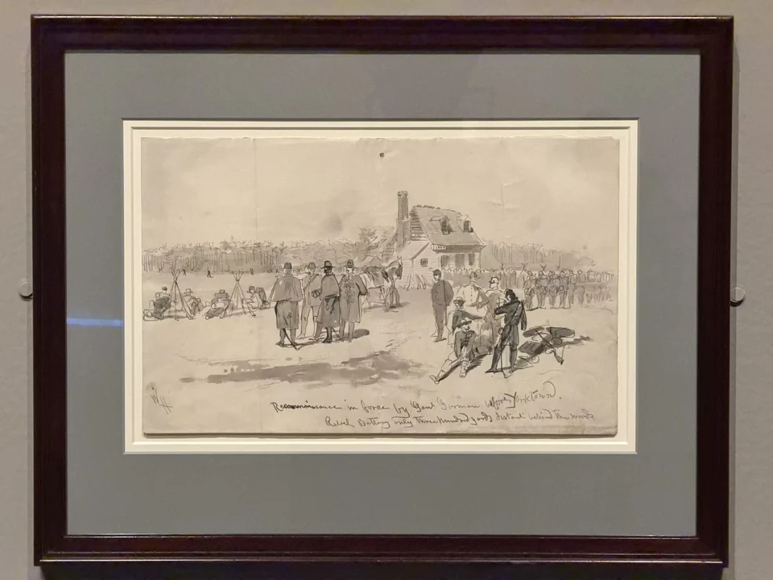

WINSLOW HOMER / LOOK CLOSER
戈尔曼将军在约克镇前的武装侦察
Reconnaissance in Force by General Gorman before Yorktown

- 作者／制作者
- 温斯洛·霍默（Winslow Homer）
- 年代
- 1862
- 媒介
- 石墨、淡彩
- 展签原文
- Graphite and wash
- 收藏
- 波士顿美术馆
- 编号
- 50.3915
- 观看地点
- 休斯顿美术馆 · Of Light and Air
作品信息与文中展签说明据现场展签 ↗。